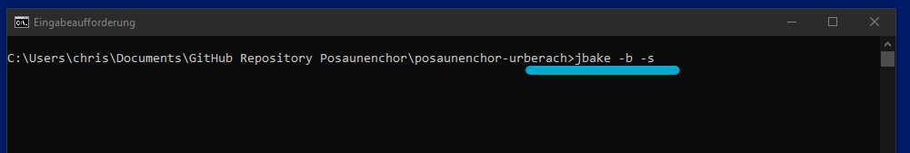
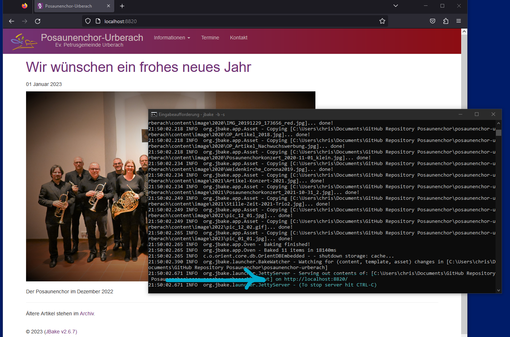
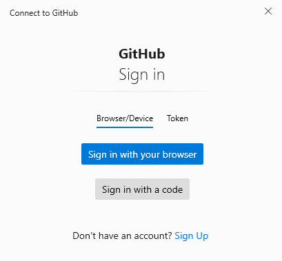
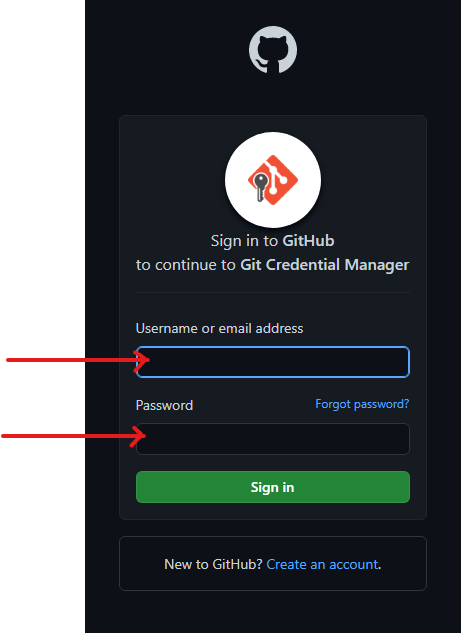
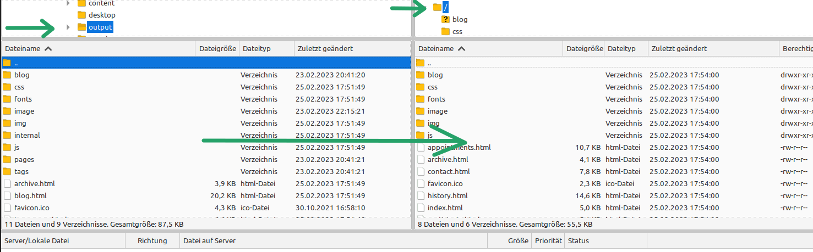

Webseite des Posaunenchor Urberach
Der Internetauftritt des Urberacher Posaunenchores ist mit JBake, einem Generator statischer Webseiten realisiert.
1. Vorbereitungen
-
Um den Internetauftritt einfach und ohne großen Aufwand verwalten zu können, muss eine Arbeitsumgebung, wie in diesem Artikel beschrieben ist eingerichtet sein.
-
Die einzelnen Dateien kann man mit jedem beliebigen Editor bearbeiten. Es eignen sich zum Beispiel
-
Notepad ++ (Windows)
-
Geany (Linux/Windows)
-
Visual Studio Code (Linux/Windows)
-
2. Repository auf GitHub
GitHub ist ein von Microsoft bereitgestellter Dienst zur Verwaltung von Softwareprojekten. Dazu wird ein projektbezogenes "Repository" erstellt, in dem die Sourcen und Dateien eines Softwareprojektes versioniert und aufbewahrt werden können.
Auf die Daten eines Repositories kann über die GitHub-Oberfläche oder mittels "git" vom lokalen Arbeisplatz aus zugegriffen werden. Ganz grob gesagt arbeitet der Entwickler dazu einen Kreislauf ab, der daraus besteht, die Daten auf seinen lokalen Rechner herunter zu laden (oder diese zu aktualisieren, wenn sie schon auf seinem Rechner vorhanden sind), sie zu bearbeiten und dann wieder in das Repository zurück zu übertragen.
Es gibt eine gelunge und einfache Anleitung, um git zu lernen. von Roger Dudler. Für die Pflege unserer Posaunenchor-Webseiten ist das Vorgehen aber so einfach, dass es auch ohne Vorkenntnisses gehen wird.
Es existiert ein GitHub-Benutzerkonto für den Posaunenchor, dem aktuell aber keine eigenen Quelldateien zugeordnet sind. Dieses Konto wird dazu verwendet, auf die Quelldateien, die in meinem GitHub-Konto verwaltet werden zugreifen zu können (_Der Posaunenchor ist ein "Kollaborateur" meines Repositories)._
Die Quelldateien des Posaunenchores befinden sich in einem öffentlichen Repository auf GitHub mit folgender Adresse: https://github.com/EuleAdmin/posaunenchor-urberach
Öffentlich bedeutet, dass sich jeder Interessierte diese Dateien herunterladen und verwenden kann. Das ist insofern kein Problem, da alle dort abgelegten Daten auch Teil des öffentlichen Internetauftrittes sind. Schreibenden Zugriff, d.h. veränderte Daten speichern oder ergänzen können nur der Besitzer und die Kollaborateure dieser Daten!
|
Es ist wichtig, keine privaten oder internen Daten (z.B. Dateien die Passwörter enthalten, Zugangsdaten, persönliche Daten des Posaunenchores etc.) in dieses öffentliche Repository zu übertragen! |
3. Übertragungen auf den gemieteten Webspace
Es existiert ein FTP-Benutzer, der berechtigt ist, Dateen des Posaunenchores zu löschen oder zu erstellen. Die mit JBake auf dem persönlichen Rechner bearbeiteten Dateien werden mit FTP (File Transfer Protocol) auf den Webspace des Posaunenchores geladen und dort von einem Webserver angezeigt.
-
Für die FTP-Übertragungen kann entweder die Konsole oder ein beliebiges FTP-Programm verwendet werden. Es eignet sich z.B.
-
FileZilla (Linux/Windows), das für Windows auch in einer portable Version verwenden lässt.
-
4. Pflege des Internetauftrittes, Arbeiten mit JBake, Git und Filezilla
Wenn die Arbeitsumgebung eingerichtet ist, kann der Internetauftritt sehr leicht gepflegt werden. Dazu werden die Quelldateien einmalig heruntergeladen und die folgenden Schritte immer wieder durchgeführt.
4.1. Die Posaunenchor-Seiten erstmalig herunterladen
Nachdem die Arbeitsumgebung eingerichtet ist, müssen die Quelldateien erstmalig von GitHub heruntergeladen werden. Das ist das Klonen eines Repositories, d.h. die Kopie des Repositories auf den lokalen Rechner. Es wird nur durchgeführt, wenn es noch kein lokales Repository zum Bearbeiten der Dateien gibt oder wenn das lokale Repository gelöscht, der Rechner neu oder Ähnliches passiert ist.
-
Anlegen eines Verzeichnisses.
-
Als erstes sollte ein Arbeitsverzeichnis an einem beliebigen Ort auf dem lokalen Rechner angelegt werden. Ich habe im Folgenden Screenshots von einem Windows-System gemacht und dieses Verzeichnis unter "Dieser PC > Dokumente > GitHub Repository Posaunenchor" angelegt.
-
-
Klonen des Repositories.
-
Klickt man in diesem Verzeichnis mit der rechten Maustaste, öffnet sich ein Menü, in dem der Punkt "Git Bash Here" ausgewählt werden kann. Daraufhin öffnet sich ein Terminalfenster. (Natürlich kann auch die "Windows Eingabeaufforderung" oder "Powershell" verwendet werden. Unter Linux verwendet man einfach das bevorzugte Terminal)
-
In diesem Terminal gibt man den folgenden Befehl ein:
-
git clone https://github.com/EuleAdmin/posaunenchor-urberach.git
Daraufhin wird ein neues Verzeichnis (posaunenchor-urberach)angelegt, das alle Dateien des Repositories enthält. Das Ergebnis sieht etwa so aus:

Fertig!
4.2. Die Posaunenchor-Seiten aktualisieren
Wenn der Internetauftritt ergänzt oder verändert werden soll, das Repository aber schon auf dem lokalen Rechner vorhanden ist, * öffnet man die "Bash Shell" (oder eine andere Konsole, z.B. die "Windows Eingabeaufforderung" wie oben beschrieben) im Unterverzeichnis "posaunenchor-urberach" und gibt folgenden Befehl ein:
git pullDaraufhin wird das lokale Repository mit den GitHub-Daten aktualisiert. Dieser Schritt sollte immer ausgefürt werden, bevor man eigene Änderungen durchführt.
(Verwendet man die Bash Shell, kann mit der Pfeil-Taste (nach oben) durch die eingegebenen Befehle geblättert werden, das erspart das wiederholte Tippen.)
Fertig!
4.3. Mit JBake arbeiten
4.3.1. Das Arbeitsverzeichnis "posaunenchor-urberach"
Ich habe die Verzeichnisstruktur in meinen Notizen zu JBake grob beschrieben. Für die Pflege der Posaunenchorseiten sind nur folgende Verzeichnisse wichtig:
-
Im Verzeichnis assets/img befinden sich einige Bilder, die ich für die allgemeinen Seiten des Internetauftrittes (Impressum, Mitmachen, Ausbildung) verwendet habe. Dort hinein kommen Bilder, die allgemeiner Natur sind und an verschiedenen Stellen eingebunden werden können.
-
Im Verzeichnis templates befinden sich die Vorlagendateien, aus denen JBake die endgültigen HTML-Webseiten zusammenstellt. Dort ist das Template "menu.ftl" interessant, wenn die Menüstruktur zum Beispiel für einen weiteren Menüpunkt verändert werden muss. Für die normalen Ergänzungen ist diese Datei aber unwichtig
-
Im Verzeichnis content befindet sich der eigentliche und zu pflegende Inhalt des Internetauftrittes. Dort liegen die Seiten "Mitmachen", "Ausbildung", "Geschichte" und das Impressum und verschiedene Unterverzeichnisse.
-
Im Unterverzeichnis content/image befinden sich alle Bilder, die in den einzelnen Artikeln und auch auf der Seite "Geschichte" verwendet werden. Ich habe das Unterverzeichnis nochmal unterteilt, um den Überblick besser behalten zu können.
-
Das Unterverzeichnis content/archive enthält alle Bilder und Dateien, die aktuell nicht verwendet werden. Das ist also das Lager aller Dateien, die vielleicht einmal verwendet werden können. Alle Dateien in diesem Verzeichnis werden für uns auf GitHub gelagert, sie sind aber kein Bestandteil des Internetauftrittes. JBake ignoriert dieses Verzeichnis!
-
Im Unterverzeichnis content/blog befinden sich die "Artikel", d.h. die aktuellen Einträge des Internetauftrittes. In diesem Verzeichnis und den enthaltenen Unterverzeichnissen werden die meisten Arbeiten durchgeführt.
-
Im Unterverzeichnis output befinden sich die von JBake bereitgestellten Dateien. Der Inhalt dieses Verzeichnisses (und nur dieses Verzeichnisses!) wird letztendlich per FTP in den gemieteten Webspace übertragen.
-
4.3.2. JBake starten und den Internetauftritt pflegen
Wenn Änderungen an den Posaunenchor-Seiten notwendig sind, müssen folgende Schritte (immer wieder) durchgeführt werden:
-
öffnen der "Bash Shell" (oder eine andere Konsole, z.B. die "Windows Eingabeaufforderung" wie oben beschrieben) im Unterverzeichnis "posaunenchor-urberach" und Aktualisierung der Daten:
git pull
-
Starten von JBake im Unterverzeichnis "posaunenchor-urberach"
jbake -b -s

-
Nach dem Start das Fenster offen lassen, JBake hat einen internen Server gestartet und stellt den gesamten Internetauftritt lokal zur Verfügung.
-
Die lokalen Seiten können im Browser unter http://localhost:8820 geöffnet werden.

-
Jetzt können alle Dateien im Arbeitsverzeichnis bearbeitet werden und das Ergebnis ist sofort im aktualisierten (F5 odder Aktualisieren klicken) Browser unter http://localhost:8820 sichtbar.
-
Es ist nicht möglich, etwas kaputt zu machen! Wenn beim Ausprobieren alles schiefgeht, dann kann man das ganze Verzeichnis "posaunenchor-urberach" einfach löschen und nocheinmal von GitHub herunterladen (klonen).
4.3.3. Neute Artikel (Posts) erstellen
JBake kann mit unterschiedlichen Dateien umgehen. Ich habe im Verzeichnis content/blog/2022 Beispiele abgelegt, die als Vorlage benutzt werden können.
-
Asciidoc-Dateien (Endung: ".adoc") - Asciidoc ist eine vereinfachte Auszeichnungssprache (ein erweitertes Markdown), mit dem sehr einfach und gut dokumentiert werden kann (Wikipedia-Artikel).
-
Markdown Dateien (Endung: ".md") - Markdown ist Asciidoc ähnlich aber bei Weitem nicht so mächtig (Wikipedia-Artikel).
-
HTML (Endung: ".html") - Die Hypertext Markup Language, die auch von JBake erzeugt wird (Wikipedia-Artikel).
Eine neue Datei muss mit den folgenden sechs Zeilen beginnen:
:jbake-title: <Überschrift> (1)
:jbake-date: 2023-10-15 (2)
:jbake-type: post (3)
:jbake-tags: post, jbake (4)
:jbake-status: published (5)
:jbake-source-highlighter: highlight.js
:idprefix:
~~~~~~ (6)| 1 | Diese Überschrift erscheint auch als Überschrift der fertigen Seite (alternativ bei Asciidoc auch nur Überschrift "= Überschrift"). |
| 2 | Anhand dieses Datums (Format: yyyy-mm-dd) sortiert JBake den Artikel in die Liste der vorhandenen Artikel. |
| 3 | "page" oder "post" ermöglicht JBake, die Datei an der richtigen Stelle einzusortieren. |
| 4 | Tags werden, wenn gewünscht, bei den einzelnen Artikeln angezeigt. |
| 5 | "draft" oder "published" kennzeichnet, ob JBake die Datei berücksichtigt oder ignoriert. |
| 6 | Diese sechs Tilden sind der Trenner in einer Datei, danach beginnt der Seiteninhalt (optional). |
(HTML-Dateien entsprechen dem Bereich zwischen den <body>-Tags einer vollständigen HTML-Datei. Sie beginnen in der Regel mit einem <p>-Tag.)
4.4. Die aktualisierten Posaunenchor-Seiten im Repository speichern
Nachdem der Internetauftritt aktualisiert ist und auf dem lokalen PC für gut befunden worden ist, müssen die Änderungen auch im GitHub-Repository eingecheckt werden. Das geschieht mit drei einfachen Befehlen.
git add . (1)
git commit -m'Eine Nachricht, was geändert wurde' (2)
git push (3)| 1 | Mit diesem Befel werden alle Änderungen im Repository vorgemerkt (Es gibt verschiedene Varianten des Befehls, diese berücksichtigt alle Änderungen) |
| 2 | Mit diesem Befel werden alle Änderungen in’s Repository übernommen. Der Kommentar beschreibt, was geändert wurde. |
| 3 | Mit diesem Befehl wird der Stand des lokalen Repository in das GitHub-Repository übertragen. |
Beim ersten Übertragen (push) in das GitHub-Repository ist eine Anmeldung notwendig, um die Berechtigung für die Übertragung zu prüfen. In diesem Fall öffnet sich folgendes Fenster

Hier muss Sign in with your Browser angeklickt und nachfolgend der GitHub Benutzername und das Passwort eingetragen werden.

Danach wird eine Email an die Adresse des GitHub-Benutzers gesendet, die einen Verifikationscode enthält. Nachdem dieser eingetragen worden ist, wird die Übertragung durchgeführt. (Die Emailadresse des GitHub-Benutzers wird an den Chorleiter des Posaunenchores weitergeleitet)
| Es ist wichtig, alle lokalen Änderungen auch in das GitHub-Repository zu übertragen, damit jeder Beteiligte, der Änderungen am Internetauftritt des Posaunenchores durchführt auch den aktuellsten Stand der Quelldateien hat. Ist dies nicht der Fall, kann es sein, dass nicht-übertragene Änderungen überschrieben werden! |
4.5. Die Posaunenchor-Seiten veröffentlichen
Um die geänderten Seiten zu veröffentlichen, d.h. auf den gemieteten Webspace zu laden, wird ein FTP-Programm, in unserem Fall FileZilla verwendet.
-
Nachdem der Server, der Benutzer und das Passwort in FileZilla eingetragen worden sind (dauerhaft im Servermanager), muss man sich lediglich mit dem Server verbinden und kann dann wie z.B. im Norton Commander dateien auf den Server, d.h. vom linken unteren Fenster in das rechte untere Fenster hochladen.
-
Im linken Fenster muss der Inhalt des Verzeichnisses output (und nur dieser) ausgewählt werden. Auf der rechten Seite muss kein Verzeichnis ausgewählt werden, da der FTP-Benutzer nur auf das bereits gewählte Verzeichnis Zugriff hat und dies dem output-Verzeichnis der linken Seite entspricht.
-
Am einfachsten und beim Umfang der Posaunenchorseiten auch akzeptabel ist es, alle Dateien auf der rechten Seite zu löschen (markieren und entfernen), um danach den gesamten Inhalt des output-Verzeichnisses von der linken Seite nach rechts hochzuladen (markieren, dann rechte Maustaste, "Hochladen" auswählen) Alternativ können auch nur die Änderungen hochgeladen werden, sofern die einzelnen Dateien bekannt sind.

Fertig!